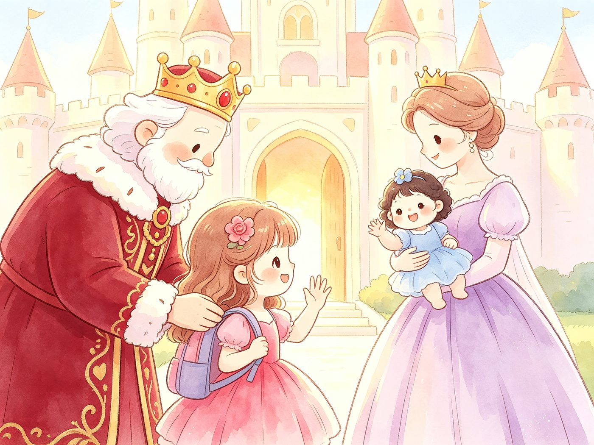
第 2 页
姐姐去幼儿园
早上，蔷薇公主背起小书包，戴上小帽子：「我去魔法幼儿园啦！」国王帮她整理书包带，王后弯腰亲亲她。小玫瑰在妈妈怀里挥着小胖手，「咿咿呀呀」——好像在说「姐姐再见！」
蔷薇姐姐去魔法幼儿园 · 风妖怪的大风捣蛋
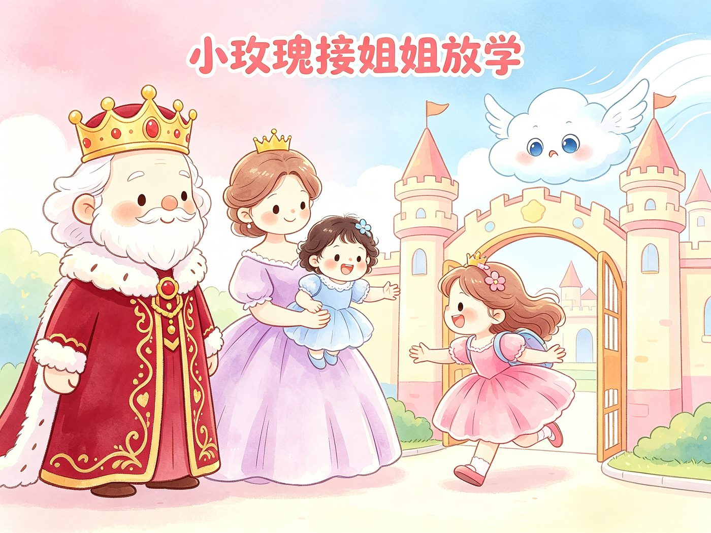
蔷薇姐姐去魔法幼儿园啦，小宝贝玫瑰还太小，只能留在家里。每天放学，她都会和爸爸妈妈一起去接姐姐——这一天，幼儿园门口来了个爱捣蛋的小风妖怪！
马卡龙柔和画风 · 水彩晕染 · 圆润软萌 · 高清适合打印
穿着粉红色蓬蓬裙，浅棕色微卷长发上别着粉色小花。温柔又调皮，这一篇她背着小书包去魔法幼儿园，放学第一个跑出来，踮脚亲亲妹妹的脸蛋。
刚诞生不久的小宝贝，浅黑色软软小卷毛、蓝色小花发饰、蓝色小连体裙。还不会走、不会说，只会咿咿呀呀、咯咯笑——她的笑声，连小风妖怪都能「治」住。
国王穿着深红镶金王袍、戴着金色王冠，王后穿着淡紫色长裙、戴着金色小皇冠。一个抱着小玫瑰去接姐姐，一个挎着点心小篮——是全家人最安心的依靠。
白色毛茸茸的云朵小妖怪，圆圆大眼睛、蓝色小脸、带小翅膀。放学路上又来捣蛋，吹跑帽子、吹翻气球——最后被小玫瑰的笑声和香香饼干「治」得乖乖的，还帮忙把东西全吹回原位。
翻开故事，看小宝贝玫瑰第一次去接姐姐放学，还用笑声「治」住了捣蛋的小风妖怪

早上，蔷薇公主背起小书包，戴上小帽子：「我去魔法幼儿园啦！」国王帮她整理书包带，王后弯腰亲亲她。小玫瑰在妈妈怀里挥着小胖手，「咿咿呀呀」——好像在说「姐姐再见！」
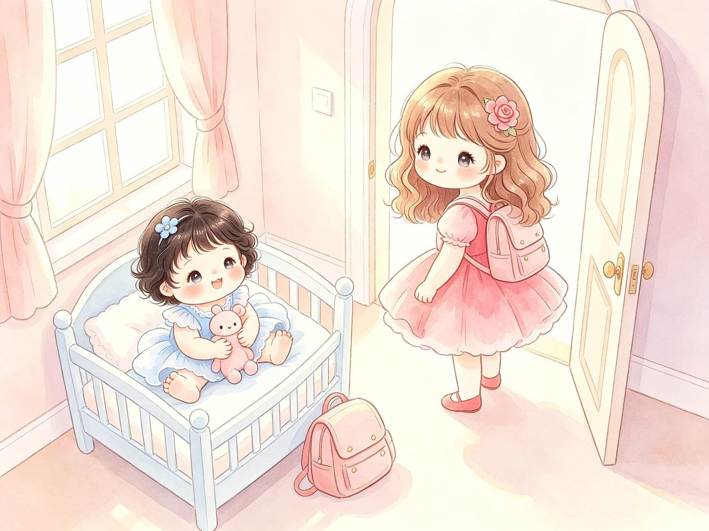
可是呀，小玫瑰还太小啦。她不会背书包，不会走那么远的路，还要睡好多好多觉。她只能留在家里，等姐姐放学回来。
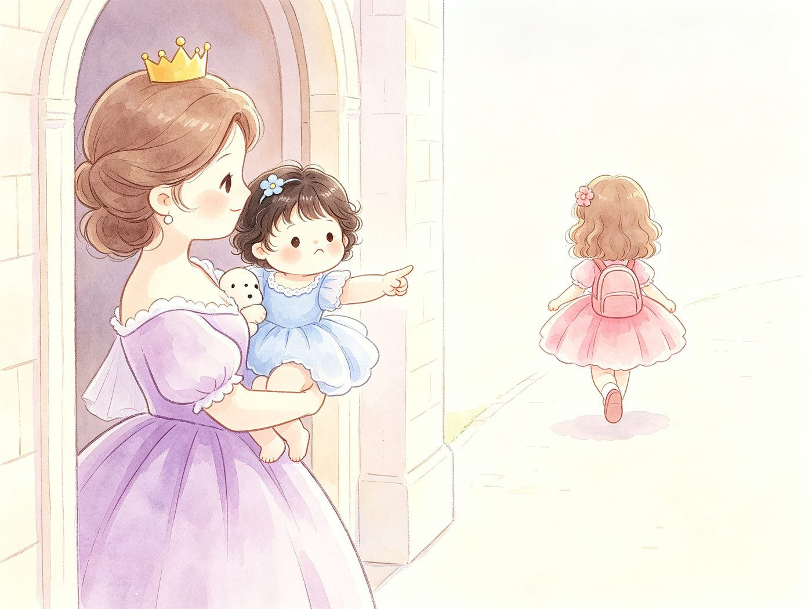
蔷薇公主蹦蹦跳跳走远了。小玫瑰被王后抱着，趴在城堡门口，眼巴巴地望着姐姐的背影，小嘴撇了撇——她想姐姐啦。
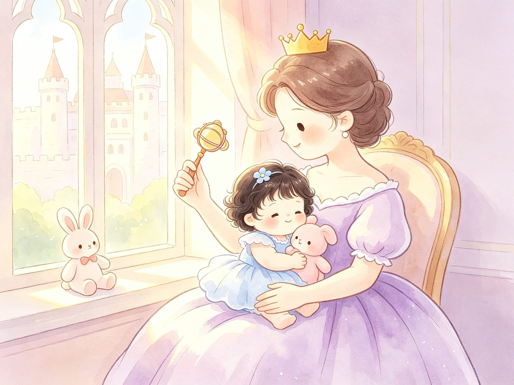
白天，小玫瑰在家玩：王后陪她摇铃鼓、晒太阳、睡午觉。她一直抱着姐姐送的小玩偶，抱得紧紧的。
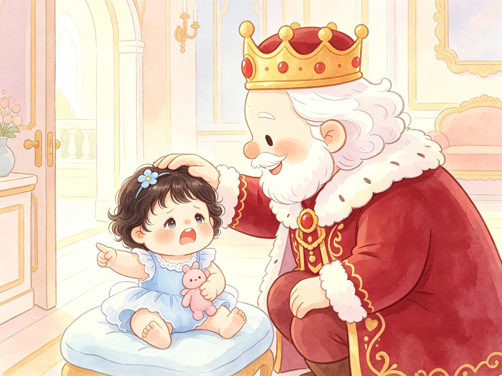
午睡醒来，小玫瑰抱着小玩偶，指着门口，咿咿呀呀地叫：「姐……姐……」国王笑着摸摸她的头：「别急，等放学，我们就去接姐姐！」
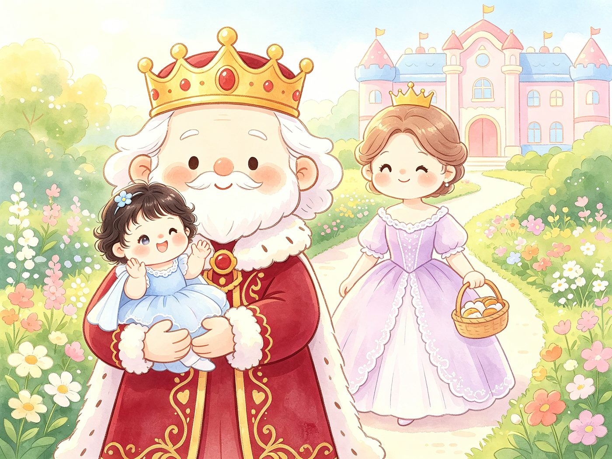
「出发啦！」国王抱着小玫瑰，王后挎着装小点心的篮子，一家人穿过开满花的花园小路，走向百花幼儿园。小玫瑰在爸爸怀里，开心地直拍手。
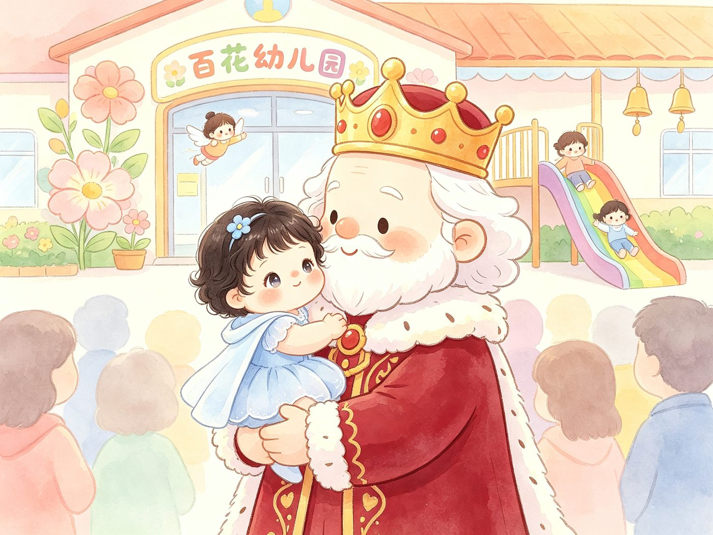
百花幼儿园门口真热闹！会开花的门牌「啵」地绽开一朵大花，会飞的彩虹滑梯上，小朋友一个接一个滑下来，风铃「叮铃铃」唱着歌。小玫瑰趴在爸爸肩头，睁着亮晶晶的眼睛，在人群里找姐姐。
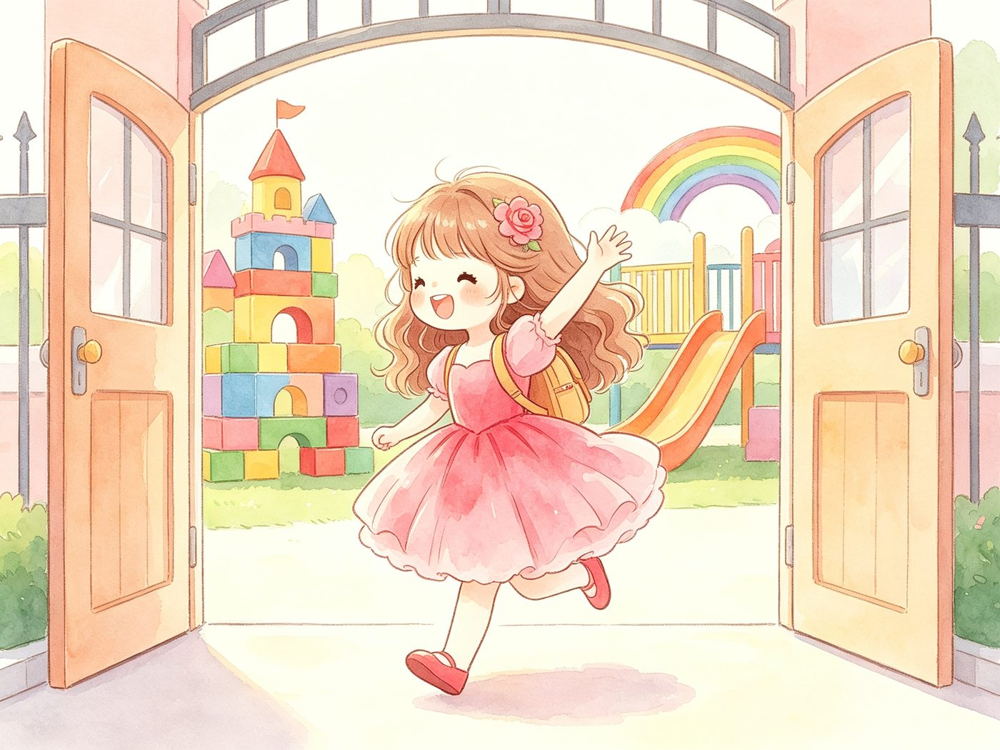
「叮铃铃——」放学铃响啦！蔷薇公主背着小书包，从魔法积木搭的小城堡旁跑出来，第一个冲出幼儿园大门：「爸爸妈妈！妹妹！我来啦！」
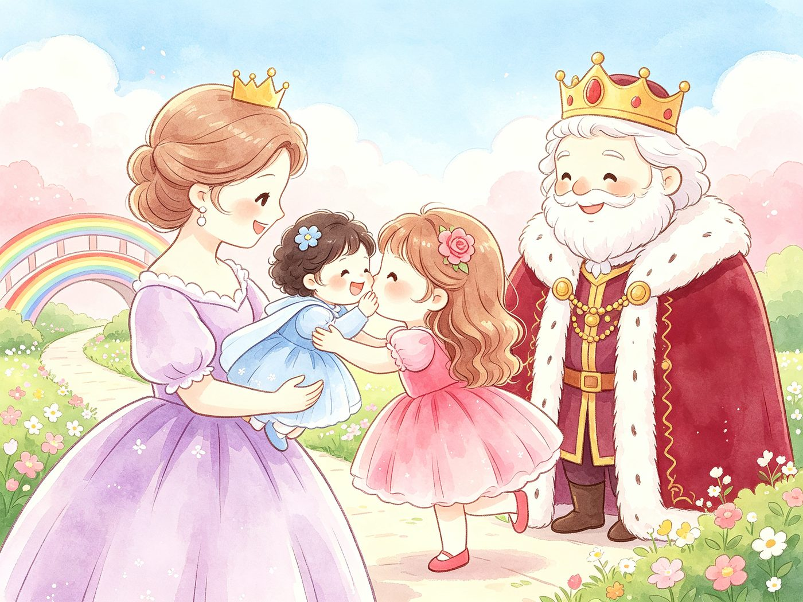
蔷薇公主跑过来，踮起脚尖，轻轻亲了亲小玫瑰的脸蛋。小玫瑰「咯咯」笑出了声，伸出胖乎乎的小手要姐姐抱。王后笑着，把姐妹俩一起搂进怀里。
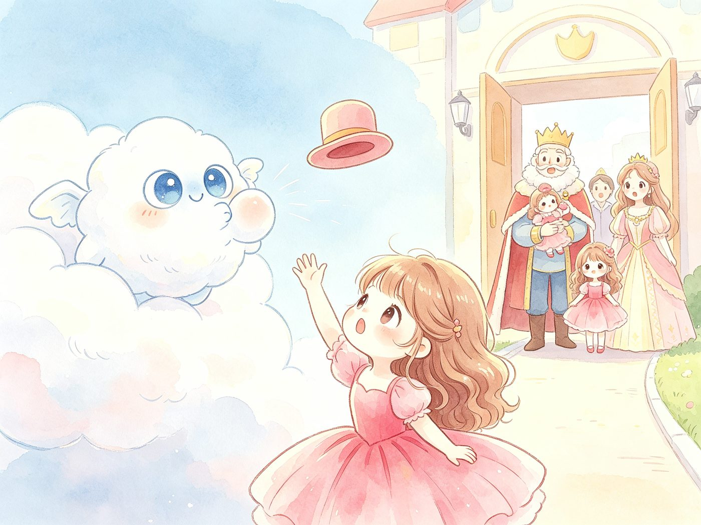
就在一家人要回家的时候——「呼——」一阵大风卷来！软萌的小风妖怪从云朵后面探出脑袋，顽皮地一吹，蔷薇公主的小帽子「嗖」地一下飞上了天！
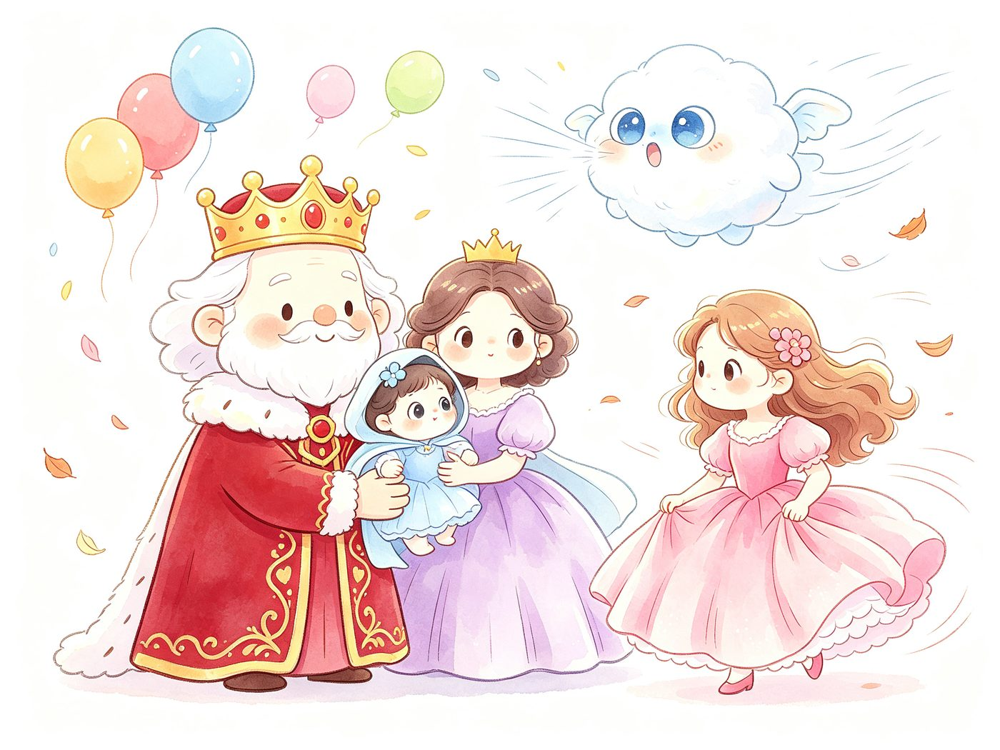
小风妖怪觉得好玩极了，越吹越起劲：「呼——呼——」它吹翻了彩虹滑梯边的小气球，卷起了满地的花瓣和落叶，还想掀起小玫瑰的小斗篷！大家的头发和裙子都被吹得乱乱的。
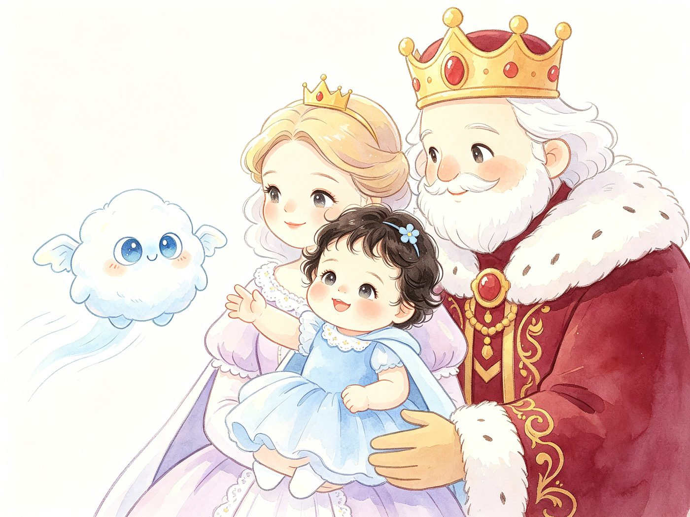
国王和王后赶紧把小玫瑰护在中间。可是呀，小玫瑰一点儿也不怕。她「咯咯咯」笑出了声，还伸出胖乎乎的小手，想去抓那个会飞的小妖怪，眼睛亮晶晶的，好像觉得它特别好玩！
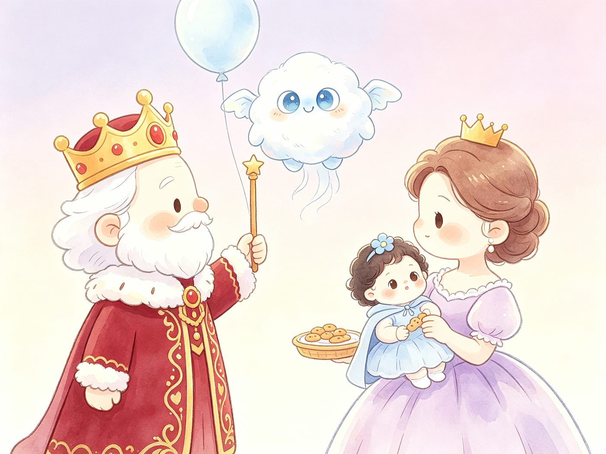
小风妖怪愣住了。它闯过那么多祸，还从来没有人对它这样笑过。它不好意思地停住了风，小翅膀垂了下来。国王挥挥魔法权杖，把乱飞的气球稳稳定住；王后从篮子里，拿出了一碟香香的小饼干。
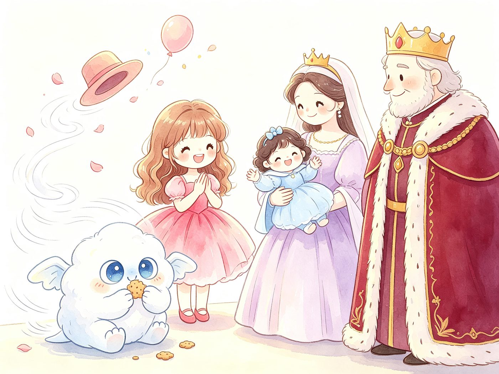
小风妖怪一闻到饼干香，眼睛立刻亮了。它乖乖蹲下来，捧着饼干「咔嚓咔嚓」啃起来，还用轻轻的小风，「呼——」把吹跑的帽子、气球、花瓣，一件一件吹回原位。两位小公主一起拍手：「哇——」
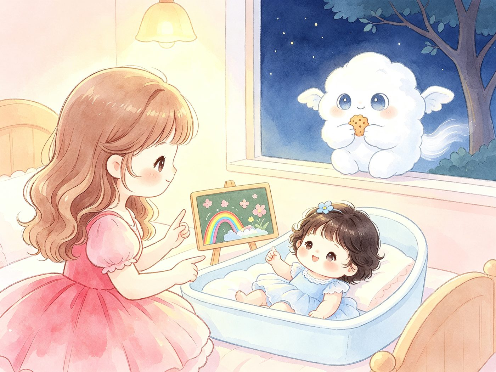
回家的路上，小风妖怪跟在后面，用温柔的小风帮一家人推开云朵、撒下花瓣雨。晚上，蔷薇公主给小玫瑰讲幼儿园的滑梯和画画课：「等妹妹长大，也去幼儿园！」小玫瑰咿咿呀呀，好像在说「好！」窗外，小风妖怪蹲在树梢，安安静静地啃着饼干。
完
小宝贝接姐姐放学的故事讲完啦——想念会等到重逢，捣蛋也可以用笑声和点心变成帮忙哦